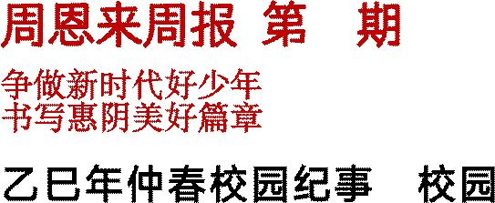
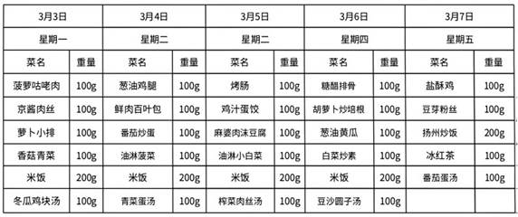

|
社会主义核心价值观富强 民主 文明 和谐自由 平等 公正 法治爱国 敬业 诚信 友善 |
二期
争做新时代好少年书写惠阴美好篇章
乙巳年仲春校园纪事：校园U盘风波及张
雨琪事件
是岁仲春廿日，值周四酉时，有女生张雨琪者，潜匿于学堂巷口"长發"处吞云吐雾。同窗张之懿、刘佳滢、李美霓三姝目击其状，遂密告随行李生军昊。*注 1
翌日①逢五,班师吴鸣告假, 不慎遗电子之牍于学堂。李生军昊伺机潜录其牍,同侪② 李驭昊行迹不慎,为信息教习暨副班所觉。课代表霍沛霖指证其咎③,然师者检视牍中物时偶有分神,李生遽④启 "西游"秘匣，竟未露破绽。散学时，李生暗语郑子宸，尽述前夜见闻。郑生亦言张女屡携智机违禁，语未竟⑤，竟睹张女执烟持机之态。* 注 2
越三日，吴师返校察牍踪有异，遂召二李生诘问。
次日，二人俱得班内申饬。
*注 3
李生愤懑，遂与郑子宸共赴吴师处，尽陈前事。师恐惊蛇，乃假英语课考级之名询众。昔廿日三证者皆立，吴师遂分而问之。及末课，召张女至明伦堂。诸生窥其垂泪而出，原拟黜其校级之位，后宥降两级，止于班内申饬。
同窗多有不平者。*注 4
张女既知告密者何人，嗔目切齿曰："彼既绝吾生路，吾亦无所顾惜矣！"坊间传言，此女素性刚烈，恐生事端。此案波澜未平，诸生皆屏息以待后闻。*注 5
|
①翌(yì)日:次日②侪(chái):共同③咎(jìu):罪过,过失④遽(jù):迅速,急忙⑤竟:泛指终了,完了 |
太史公曰：学堂非市井，当以修身为要
▌注释详考
1. **长發与吞云吐雾**
"长發"乃校侧商铺实名，学生放学必经之地；"吞云吐雾"典出《聊斋志异·司文郎》，此处指吸烟。古时学堂严禁烟酒，今制亦然。
2. **电子之牍与西游秘匣电子之牍即 U 盘，取"竹牍" 古意转化；"西游秘匣"特指 U 盘中《西游记》电子书文件夹，学生常借此名藏课外读物。
3. **申饬源流**
古制申饬指官府训诫，《清会典》载"凡官员有过，六科申饬"，此处引申为班级内部纪律处分。
4. **明伦堂之变**
明伦堂原为古代学宫论道之所，《明史·选举志》云" 每月朔望，集诸生明伦堂"，今借指教师办公室。处分降级引发争议，盖因校规明载吸烟者当受校级处分。
5. **刚烈之诫**
|
投稿 QQ1548449898 电话 13145089008 13270463238 Caixukun11451489@outlook.com |
史载东汉末夏侯惇"拔矢啖睛"、唐平阳公主"娘子军" 皆以刚烈著称，然过刚易折。师长未及时疏导，恐酿后患，此现代教育之难题也。一、词语解释题（每题 2 分） 1. "吞云吐雾"在文中的具体含义是
A. 修炼仙术 B. 吸烟行为 C. 口吐狂言 D.
制造烟雾
2. "申饬"一词的古今异义是
A. 古代指官员升迁，今指班级表彰
B. 古代指官府训诫，今指纪律处分
C. 古代指科举考试，今指课堂测验
D. 古今同义，均指严厉批评
3. "明伦堂"在文中借指
A. 学校礼堂 B. 教师办公室 C. 教务处 D. 图书馆二、文言翻译题（每题 4 分）
1. **翻译划线句：**
"李生遽启'西游'秘匣，竟未露破绽"
2. **翻译划线句：**
"彼既绝吾生路，吾亦无所顾惜矣" 三、内容理解题（共 12 分）
1. **事件时间轴梳理（填空）二月廿日：张雨琪______ → 廿一日：李军昊______ → 廿四日：吴师______ → 廿六日：张雨琪______
2. **多选题：**
下列体现古代文化转化的是（ ）
A. " 电 子 之 牍 " 指 U 盘
B. "明伦堂"指办公室
C. "戌时"指晚上七至九点 D. "申饬"指校级处分
3. **简答：**
为何同窗对张雨琪的处分结果"多有不平"？（2 分）
四、
文言断句题（3 分）为下列句子划分朗读节奏
（划 3 处）：
**"师恐惊蛇乃假英语课考级之名询众"
|
答 上期答案:一、BBC 二、参 将加强学生信息道德和行 了学生独特的审美和创新 |
五、 观点分析题（5 分）结合文末"太史公曰"段落，写出两条古代教育思想对现代校园管理的启示。
考答案：近日信息课后，李军昊未经吴鸣老师许可，试图复制其 U 盘中内容，被老师察觉，李驭昊急忙拔 U 盘也被发现。李军昊保住存有复制内容的 U 盘，信息老师询问课代表后要求李军昊打 U 盘检查，李军昊趁老师走神打 《西游记》PPT 伪装，成功躲过检查，此事在校园引发热议，学校表示为规范教育。
参考答案：美术老师把墙洞视为艺术这一行为具有创新性和教育意义。从创新性来看，他打破了人们对墙洞应被修补的常规认知，挖掘出墙洞独特的艺术价值。从教育意义上说，引导学生从艺术角度看待破洞，激发了学生的创意和想象力，让学生明白艺术来源生活，培养思维 。
参考答案：这三名学生具有拾金不昧的优秀品质。从发现 5 元钱后，他们没有丝毫犹豫，经过简单商量就一致决定将钱上交给学校教务处可以看出，他们坚守道德准则，不贪图小利，为他人着想，明白失主丢钱会着急三、 略
附加题：[廿八日纪] 原来是张之懿告诉张雨琪谁告老师的，她班级处分已升为年级处分，正密谋如何报复。师又发现她谈恋爱。请写一篇后续，要求不少于 600 字。

周一小雨 14-5ºC 周二阴转多云 9-4ºC周三 阴 10-6ºC 周四 阴 9-5ºC 周五 阴 9-3ºC 创作:侯天佑 李军昊 吴铭孙佳铭
投稿 QQ1548449898 电话 13145089008 13270463238
Caixukun11451489@outlook.com